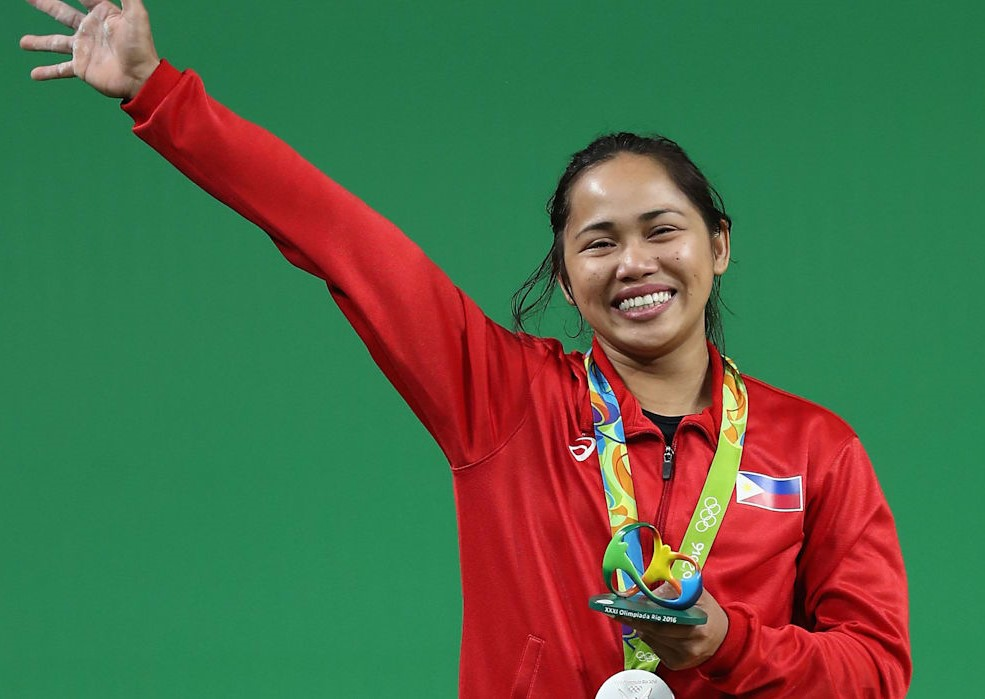
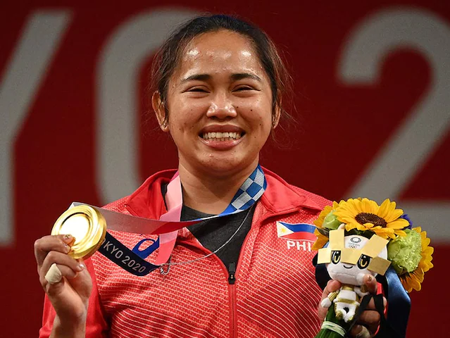

Hidilyn Diaz snatched the first Olympic Gold medal for her country since 1924. It was not an easy lift, though.
Hidi came from Mampang, Zamboanga. Unlike most girls who developed their love of sports from playing volleyball, Hidi came to realize early that she will not excel in those sports requiring height and agility. But on lifting pails of water—she can compete even with her male cousins. Hence, the idea of being a weightlifter came into her.
Her father was a tricycle driver in Zamboanga, so she did not have access right away to elite gyms. That did not stop her. Her cousin made her practise using makeshift barbells out of concrete and tin cans.
Before being the Philippines’ first gold medalist – with an Olympic Record on top of that – Diaz placed second to last place in the 2008 Beijing Olympics. She was the first female weightlifting representative of the Philippines. She was also a wild card pick, meaning the International Olympic Committee let her compete despite being unqualified due to a lack of other representatives from her country.
In the 2012 London Olympics, when people were expecting her to win a medal, Diaz ended with a did not finish (DNF) after 3 unsuccessful clean and jerk attempts. Should Hidi give up already?
Four years after her London disappointment, she was back on her feet at the Rio 2016 Games, and set her sights on bronze.
Those in the know believed that the battle for gold was a two-horse race between Chinese-Taipei’s Hsu Shu-Ching and China’s Li Yajun. Hidilyn believed it too.
“That’s all I wanted - a bronze medal. I would have been grateful with a bronze medal because that’s what we were targeting," she admitted. And when Hsu and Li took a commanding lead after the snatch with scores of 101kg and 100kg, it looked like the predictions were right.
But in the clean and jerk, Diaz cleared 111kg on her first attempt, forcing Korea’s Yoon Jin Hee to at least match that. It took Joon all three of her attempts to lift 111kg but the Filipina chalked up 112kg on her next lift to secure at least a podium for her country.
Hsu raised 112kg on her first lift, practically guaranteeing her gold, but China's Li hyper-extended her left elbow on a monster 123kg attempt.
The injury meant Li couldn't complete a single attempt in the clean and jerk and Diaz had won her country's first medal since Mansueto 'Onyok' Velasco won boxing silver at the 1996 Atlanta Olympic Games.
The training for the 2020 Olympics was tough given the pandemic. Gyms were closed, so Hidi needed to find a way to train. Being the humble and perseverent person that she is, she, again, made use of makeshift barbells just to get through.
Now for the event.
The 30-year-old Filipina got off to a strong start clearing 94kg in her first snatch attempt, then proceeding to tie the previous Olympic record of 97kg in the second attempt.
After Muattar Nabieva of Uzbekistan cleared 98kg to reset the Olympic record in snatch, Diaz looked to take the lead with 99kg, but did not record a lift.
By her second attempt of lifting 124kg in the clean and jerk, Diaz went head-to-head with China’s Liao Qiuyun, the world record holder who took the lead with 126kg in her third attempt. But the Filipina took home the gold with the 127kg to close out the event.
All the hardwork and tears, they all paid off. Hidi's story is not a single moment heroism that started when she was on the Olympic Stage. It was a long struggle of hard work and finding herself's inner push to keep fighting for what she believes in. It was a mix of all those attempts across the years, the healing of all those scars that her training and losses imposed on her. Truly, a hero in her own way.
- Olympics.com: Hidilyn Diaz Aiming for Gold in Tokyo 2020
- Olympics.com: Can this Hardworking Woman Win Her Country's First-Ever Olympic Gold?
- Rappler.com: Hidilyn Diaz nabs silver, first PH Olympic medal in 20 years
- Rappler.com: Golden lift: Hidilyn Diaz captures historic Olympic gold
- TheSmartLocal.com: 11 Things To Know About Hidilyn Diaz, From Starting Out With Homemade Barbells To Her P35.5M Prize
- News.ABS-CBN.com: The making of Hidilyn Diaz: From lifting pails of water in Zamboanga to lifting a nation’s spirit